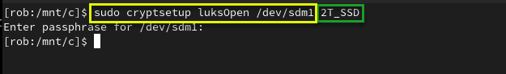
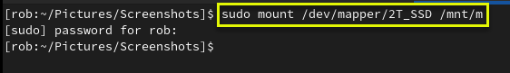

Mounting and Unmounting a LUKS Encrypted USB Volume
This process also works for hard drives.
Basic commands to view the disks/USB devices:
- blkid
- duf
- lsblk
- lsblk -a
- lsblk -o +UUID,PARTUUID
- lsblk -o +UUID,FSTYPE,PARTUUID
- ls -lF /dev/disk/by-id
- sudo lshw -short -C disk
- sudo udisksctl info -b /dev/??
01. USB drive has not been inserted (plugged in) yet.
To see volumes type:
lsblk

02. GUI password prompt when encrypted drive is plugged in (I clicked cancel to demonstrate mounting from commandline).

03. USB drive inserted (plugged in) and showing as /dev/sdm1.
To see volumes type:
lsblk
 and showing as /dev/sdm1. Your volume name may be different than /dev/sdm1.")
04. Check the volume information type:
sudo udisksctl info -b /dev/sdm1
or
sudo cryptsetup isLuks -v /dev/sdm1
The volume /dev/sdm1 shows as "crypto_LUKS".

05. If you try to mount the locked LUKS encrypted volume it will fail. (Screenshot shows mount failed. This is because the volume is locked. Run cryptsetup first to unlock.).

06. Running cryptsetup to unlock the encrypted volume (Assigning alias of "2T_SSD" to reference the unlocked volume. The alias can be whatever you want.).
To open the encrypted filesystem type:
sudo cryptsetup luksOpen /dev/sdm1 2T_SSD

07. Decrypted volume showing as 2T_SSD, but not yet mounted.
To see the unlocked volume type:
lsblk

08. Decrypted volume alias "2T_SSD" showing under /dev/mapper.
Check /dev/mapper to see if your alias is there:
ls -al /dev/mapper

09. Password prompt when using sudo to mount decrypted 2T_SSD volume to /dev/m.
To mount your alias to a mount point type:
sudo mount /dev/mapper/2T_SSD /mnt/m

10. Decrypted volume showing unlocked and mounted at /mnt/m.
To see volumes type:
lsblk

11. Unmounting /mnt/m.
To unmount the volume type:
sudo umount /mnt/m

12. Closing cryptsetup session (Locking it).
To close the volume type:
sudo cryptsetup close 2T_SSD
.")
13. USB drive unmounted and unplugged from system.
To see volumes type:
lsblk

Mount a USB volume and use umask to allow "other" full access.
sudo mount /dev/sdi1 /mnt/i -o umask=000,utf8
You can automatically mount by UUID if you want the mount points to consistently mount to the same device. Each partition on a drive will have its own UUID.
Use this to find the UUID:
lsblk -o +UUID,PARTUUID
In fstab;
UUID=FC3E-233D /mnt/i auto user,umask=000,utf8 0 0
UUID=B06E-CC89 /mnt/c auto user,umask=000,utf8 0 0
UUID=02608207608201A1 /mnt/h auto user,umask=000,utf8 0 0
After editing the fstab file, run 'systemctl daemon-reload' to update systemd